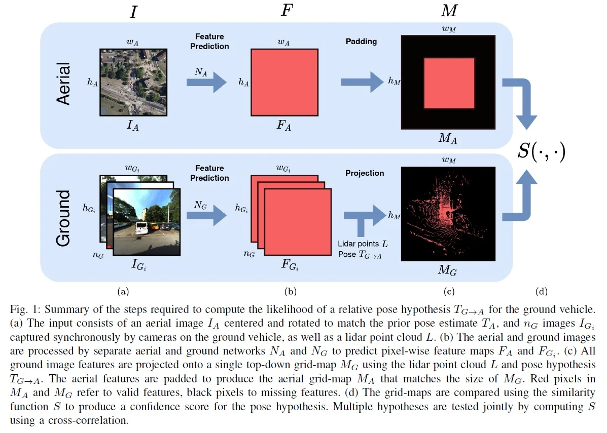
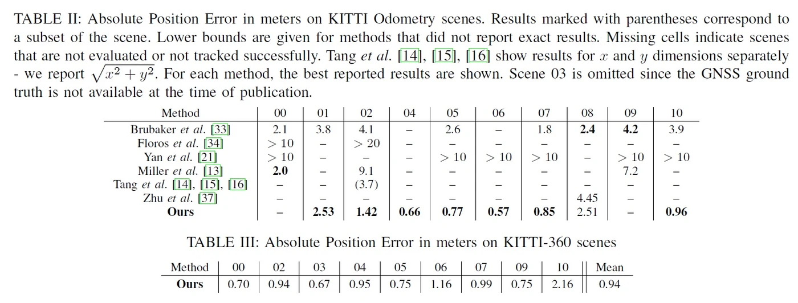
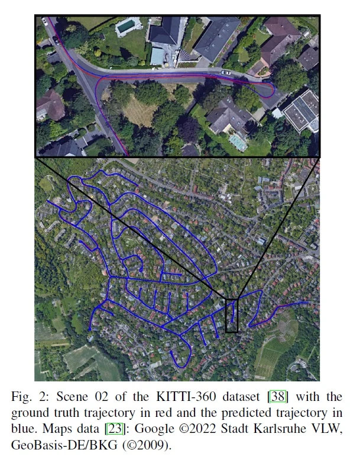

tl;dr Perform metric self-localization by matching a vehicle’s lidar and camera readings against aerial imagery.
Abstract
This paper proposes a novel method for geo-tracking, i.e. continuous metric self-localization in outdoor environments by registering a vehicle’s sensor information with aerial imagery of an unseen target region. Geo-tracking methods offer the potential to supplant noisy signals from global navigation satellite systems (GNSS) and expensive and hard to maintain prior maps that are typically used for this purpose. The proposed geo-tracking method aligns data from on-board cameras and lidar sensors with geo-registered orthophotos to continuously localize a vehicle. We train a model in a metric learning setting to extract visual features from ground and aerial images. The ground features are projected into a top-down perspective via the lidar points and are matched with the aerial features to determine the relative pose between vehicle and orthophoto.
Our method is the first to utilize on-board cameras in an end-to-end differentiable model for metric self-localization on unseen orthophotos. It exhibits strong generalization, is robust to changes in the environment and requires only geo-poses as ground truth. We evaluate our approach on the KITTI-360 dataset and achieve a mean absolute position error (APE) of 0.94m. We further compare with previous approaches on the KITTI odometry dataset and achieve state-of-the-art results on the geo-tracking task.
Method
1. Alignment

2. Tracking
We choose a simple tracking method based on an Extended Kalman Filter (EKF) with the constant turn-rate and acceleration (CTRA) motion model that continuously integrates measurements of an inertial measurement unit (IMU). The EKF keeps track of the current vehicle state and corresponding state uncertainty. To demonstrate the effectiveness of our registration, we use only the turn-rate and acceleration of the IMU which on its own results in large long-term drift. The acceleration term is integrated twice to produce position values, such that small acceleration noise leads to large translational noise over time. We use our registration method to continuously align the trajectory with aerial images such that the drift is reduced to within the registration error of the method.
Results
We achieve state-of-the-art results on both the KITTI and KITTI-360 datasets. The KITTI dataset contains only a single front-facing camera and can thus not leverage the full potential of our method. We still evaluate on KITTI since it is the dataset that most related works reported on. We achieve better results than other approaches, but our method fails to track two scenes due to the limited field-of-view. KITTI-360 includes a front-facing camera and two side-facing cameras and is captured over different trajectories than KITTI. Here, we successfully track all scenes and achieve sub-meter accuracy.


Citation
@inproceedings{fervers2022continuous,
title={Continuous self-localization on aerial images using visual and lidar sensors},
author={Fervers, Florian and Bullinger, Sebastian and Bodensteiner, Christoph and Arens, Michael and Stiefelhagen, Rainer},
booktitle={2022 IEEE/RSJ International Conference on Intelligent Robots and Systems (IROS)},
pages={7028--7035},
year={2022},
organization={IEEE}
}